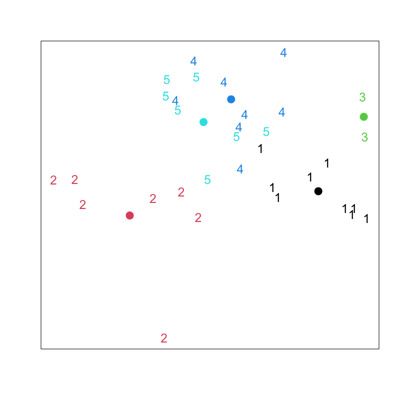

クラスタ分析
非階層的方法と分析の評価
(Press ? for help, n and p for next and previous slide)
講義概要
- 第1日: クラスタ分析の考え方と階層的方法
- 第2日: 非階層的方法と分析の評価
クラスタ分析の復習
クラスタ分析
cluster analysis
個体の間に隠れている 集まり=クラスタ を個体間の“距離”にもとづいて発見する方法
- 個体間の類似度・距離(非類似度)を定義 :
- 同じクラスタに属する個体どうしは似通った性質
- 異なるクラスタに属する個体どうしは異なる性質
- さらなるデータ解析やデータの可視化に利用
- 教師なし学習の代表的な手法の一つ
クラスタ分析の考え方
- 階層的方法 :
- データ点およびクラスタの間に 距離 を定義
- 距離に基づいてグループ化:
- 近いものから順にクラスタを 凝集
- 近いものが同じクラスタに残るように 分割
- 非階層的方法 :
- クラスタの数を事前に指定
- クラスタの 集まりの良さ を評価する損失関数を定義
- 損失関数を最小化するようにクラスタを形成
階層的クラスタリング
- 凝集的手続き
- データ・クラスタ間の距離を定義
- データ点間の距離
- クラスタ間の距離
- データ点およびクラスタ間の距離を計算
- 最も近い2つを統合し新たなクラスタを形成
- クラスタ数が1つになるまで2-3の手続きを繰り返す
- データ・クラスタ間の距離を定義

Figure 1: 凝集的手続きの例
非階層的方法
非階層的方法の手続き
- 対象の変数 : \(\boldsymbol{X}=(X_1,X_2,\dotsc,X_{d})^{\mathsf{T}}\) (\(d\)次元)
観測データ : \(n\) 個の個体の組
\begin{equation} \{\boldsymbol{x}_{i}\}_{i=1}^{n} = \{(x_{i1},x_{i2},\dotsc,x_{id})^{\mathsf{T}}\}_{i=1}^{n} \end{equation}個体とクラスタの対応 \(C\) を推定 :
\begin{equation} C(i) =\text{(個体 \(i\) が属するクラスタ番号)} \end{equation}- 対応 \(C\) の 全体の良さ を評価する損失関数を設定
- 観測データ \(\{\boldsymbol{x}_{i}\}_{i=1}^{n}\) に最適な対応 \(\{C(i)\}_{i=1}^{n}\) を決定
\(k\)-平均法の損失関数
- クラスタの個数 \(k\) を指定
2つの個体 \(i,i'\) の 近さ=損失 を距離の二乗で評価
\begin{equation} \|\boldsymbol{x}_i-\boldsymbol{x}_{i'}\|^2 = \sum_{j=1}^{d}(x_{ij}-x_{i'j})^2 \end{equation}損失関数 \(W(C)\) : クラスタ内の平均の近さを評価
\begin{equation} W(C) = \sum_{l=1}^k\frac{1}{n_l}\sum_{i:C(i)=l}\sum_{i':C(i')=l}\|\boldsymbol{x}_i-\boldsymbol{x}_{i'}\|^2 \end{equation}
\(k\)-平均法の性質
クラスタ \(l\) に属する個体の平均 :
\begin{equation} \bar{\boldsymbol{x}}_l = \frac{1}{n_l}\sum_{i:C(i)=l}\boldsymbol{x}_i \end{equation}損失関数 \(W(C)\) の等価な表現 :
\begin{equation} W(C) = 2\sum_{l=1}^k\sum_{i:C(i)=l}\|\boldsymbol{x}_i-\bar{\boldsymbol{x}}_{l}\|^2 \end{equation}- 最適な対応 \(C\) : クラスタ内変動の総和が最小
近似的な最適化
クラスタ対応の最適化
- 最適化: 損失関数 \(W(C)\) を最小とする \(C\) を決定
- 貪欲な \(C\) の探索:
- 原理的には全ての値を計算すればよい
- 可能な \(C\) の数: \(k^n\) 通り (有限個のパターン)
- サンプル数 \(n\) が小さくない限り実時間での実行は不可能
- 近似的な \(C\) の探索:
- いくつかのアルゴリズムが提案されている
基本的な考え方: Lloyd-Forgyのアルゴリズム
標本平均と変動の平方和の性質を利用
\begin{equation} \bar{\boldsymbol{x}}_l =\arg\min_{\mu} \sum_{i:C(i)=l}\|\boldsymbol{x}_i-\boldsymbol{\mu}\|^2 \quad \text{(クラスタ\(l\)の標本平均)} \end{equation}
Lloyd-Forgyのアルゴリズム
- クラスタ中心の初期値 \(\boldsymbol{\mu}_1,\boldsymbol{\mu}_2,\dots,\boldsymbol{\mu}_k\) を与える
各データの所属クラスタ番号 \(C(i)\) を求める
\begin{equation} C(i) = \arg\min_l\|\boldsymbol{x}_i-\boldsymbol{\mu}_l\| \end{equation}各クラスタ中心 \(\boldsymbol{\mu}_l\;(l=1,2,\dotsc,k)\) を更新する
\begin{equation} \boldsymbol{\mu}_l = \frac{1}{n_l}\sum_{i:C(i)=l}\boldsymbol{x}_i, \quad n_l=|\{\boldsymbol{x}_i|C(i)=l\}| \end{equation}- 中心が変化しなくなるまで 2,3 を繰り返す
アルゴリズムの性質
- 結果は 確率的
- 初期値 \(\boldsymbol{\mu}_1,\boldsymbol{\mu}_2,\dots,\boldsymbol{\mu}_k\) に依存
- アルゴリズムの成否は確率的
(最適解が得られない場合もある)
- 一般には複数の初期値をランダムに試して損失を最小とする解を採用する
平均の代わりにメドイド (medoid; 中心にある観測値) を用いる方法もある
\begin{equation} \boldsymbol{x}^{\mathrm{medoid}}_{l} =\arg\min_{\boldsymbol{x}_{i}} \sum_{i':C(i')=l} \|\boldsymbol{x}_{i}-\boldsymbol{x}_{i'}\|^2 \end{equation}
事例
都道府県別好きなおむすびの具(一部)での例

Figure 2: 非階層的クラスタリング

Figure 3: Lloyd-Forgyのアルゴリズム (その1)

Figure 4: Lloyd-Forgyのアルゴリズム (その2)

Figure 5: Lloyd-Forgyのアルゴリズム (その3)

Figure 6: Lloyd-Forgyのアルゴリズム (その4)

Figure 7: Lloyd-Forgyのアルゴリズム (その5)

Figure 8: Lloyd-Forgyのアルゴリズム (その6)

Figure 9: クラスタリングの結果
演習
R: 関数 kmeans()
\(k\)-平均法を実行するための標準的な関数
kmeans(x, centers, iter.max = 10, nstart = 1, algorithm = "Hartigan-Wong") ## x: データフレーム ## centers: クラスタ数 ## iter.max: 最大繰り返し数 ## nstart: 初期値の候補数 ## algorithm: 最適化法の指定．他に "Lloyd", "Forgy", "MacQueen" が指定可- 結果は変数のスケールにも依存
- 例えば測定値の単位により異なる
- 必要ならば主成分分析の場合と同様にデータの標準化を行う
練習問題
データセット
japan_social.csvを用いて 以下を確認しなさいJS.data <- read.csv("data/japan_social.csv", row.names=1)- 関数
kmeans()を用いて 各変数平均0，分散1に標準化 (関数scale()を利用) したデータを7クラスタに分割しなさい - 各クラスタ内の県名を表示しなさい
- 関数
clusplot()を用いて 2次元散布図に各クラスタを表示しなさい
- 関数
R: 関数 cluster::pam()
\(k\)-メドイド法を実行するための関数
pam(x, k, metric = "euclidean", stand = FALSE) ## x: データフレーム，または距離行列 ## k: クラスタの数 ## metric: 距離の指定(xがデータフレームの場合)．他に "manhattan" が指定可 ## stand: 標準化(平均0，絶対偏差1)- 詳細は
?cluster::pamを参照
- 詳細は
練習問題
- データセット
japan_social.csvを用いて 以下を確認しなさい- 関数
pam()を用いて 各変数平均0，絶対偏差1に標準化したデータを7クラスタに分割しなさい - 各クラスタ内の県名を表示しなさい
- 関数
clusplot()を用いて 2次元散布図に各クラスタを表示しなさい
- 関数
- 余裕がある人はデータセット
omusubi.csvでも確認しなさい
クラスタ構造の評価
階層的方法の評価
- 評価の対象
データ \(\boldsymbol{x}_i\) と最初に統合されたクラスタ \(C\) の距離:
\begin{equation} d_i = D({\boldsymbol{x}_i},C) \end{equation}最後に統合された2つのクラスタ \(C',C''\) の距離:
\begin{equation} D = D(C',C'') \end{equation}
凝集係数 (agglomerative coefficient):
\begin{equation} AC = \frac{1}{n}\sum_{i=1}^{n}\left(1-\frac{d_i}{D}\right) \end{equation}
凝集係数の性質
定義より
\begin{equation} 0\le AC\le 1 \end{equation}- 1に近いほどクラスタ構造が明瞭
- banner plot: 各 \((1-{d_i}/{D})\) を並べた棒グラフ
- banner plot の面積比として視覚化
非階層的方法の評価
- 評価の対象
\(\boldsymbol{x}_i\) を含むクラスタ \(C^1\) と \(\boldsymbol{x}_i\) の距離:
\begin{equation} d^1_i=D({\boldsymbol{x}_i},C^1\setminus{\boldsymbol{x}_i}) \end{equation}一番近いクラスタ \(C^2\) と \(\boldsymbol{x}_i\) の距離:
\begin{equation} d^2_i=D({\boldsymbol{x}_i},C^2) \end{equation}
シルエット係数 (silhouette coefficient):
\begin{equation} S_i = \frac{d^2_i-d^1_i}{\max(d^1_i,d^2_i)} \end{equation}
シルエット係数の性質
定義より
\begin{equation} -1\le S_i\le 1 \end{equation}- 1に近いほど適切なクラスタリング
- 全体の良さを評価するには \(S_i\) の平均を用いる
- 距離の計算を適切に行えば階層的方法でも利用可
演習
R: 関数 cluster::agnes()
関数
agnes()による凝集係数の取得### 凝集係数の取得 summary(agnes(x, # データフレーム stand = TRUE, # 正規化 metric = "euclidean", # ユークリッド距離 method = "average") # 群平均法 )$ac ### 凝集係数の視覚化 (banner plot) plot(agnes(x), # 階層的クラスタリングの結果 which.plots=1) # banner plot を選択 ## plot および cluster::bannerplot のオプションを参考
練習問題
- データセット
japan_social.csvを用いて 以下を検討しなさい- 関数
agnes()を用いて階層的クラスタリングを行いなさい- 標準化: 行う
- データ距離: ユークリッド距離，およびマンハッタン距離
- クラスタ距離: 群平均法
- 凝集係数を用いて2つの距離の評価を行いなさい
- 関数
R: 関数 cluster::pam()
関数
pam()によるシルエット係数の取得### シルエット係数関連の情報取得 summary(pam(x, k))$silinfo ### 各データのシルエット係数 summary(pam(x, k))$silinfo$widths ### 各クラスタのシルエット係数の平均 summary(pam(x, k))$silinfo$clus.avg.widths ### シルエット係数の平均 summary(pam(OM.dsy,k=k))$silinfo$avg.width ### シルエット係数の視覚化 (silhouette plot) plot(pam(OM.dsy,k=k), which.plot=2) ## plot および cluster::silhouette のオプションを参考
練習問題
- データセット
omusubi.csvを用いて 以下を検討しなさいHellinger距離を用いて距離行列を計算しなさい
\(\boldsymbol{p},\boldsymbol{q}\) を確率ベクトルとして 定義される確率分布の距離
\begin{equation} d_{\mathrm{hel}}(\boldsymbol{p},\boldsymbol{q}) = \frac{1}{\sqrt{2}}d_{\mathrm{euc}}(\sqrt{\boldsymbol{p}},\sqrt{\boldsymbol{q}}) \end{equation}- クラスタ数4-10のシルエット係数を比較しなさい
- 適当と思われるクラスタ数による分析を行いなさい
次週の予定
- 第1日: 時系列の基本モデル
- 第2日: モデルの推定と予測